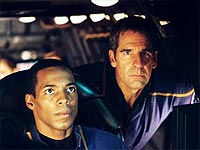
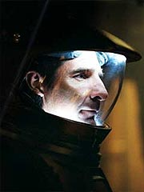
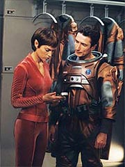

|
MANCHETE
DO EPISDIO
Segmento
traz mistrio da Extenso
e leva o capito Archer ao limite
Episdio
anterior | Prximo episdio Sinopse: A
Enterprise atinge a uma rea do espao em que as anomalias da Extenso Dlfica
ficam ainda mais poderosas. Alm de causar estranhas distores do campo gravitacional
interno da nave (que fazem pratos voarem e o prprio espao se expandir e comprimir
imprevisivelmente), os fenmenos acabam causando uma espcie de curto-circuito
dos motores de dobra. Trip obrigado a deslig-los, deixando a nave em fora
de impulso.
A NX-01 ento encontra uma nave deriva no espao, recentemente
atacada. Um grupo vai a bordo mas no encontra sobreviventes. Reed consegue extrair
alguma informao dos bancos de dados, mas depende do processamento de Hoshi para
decodific-las. A equipe volta Enterprise e Archer ordena a partida o mais rpido
possvel, para evitar que sua nave possa ser vtima dos mesmos seres hostis que
atacaram os aliengenas.
 No
demora muito e uma outra nave de fato se aproxima da Enterprise e abre fogo contra
a nave. Uma equipe de abordagem usa teletransportes para se materializar na nave
terrestre, com o objetivo de pilhar tudo que puder encontrar. As foras de segurana
de Reed, reforadas pelos MACOs, tentam repelir os atacantes, mas todos conseguem
escapar, exceo de um, nocauteado por Trip na engenharia.
Seus ferimentos
so leves e ele levado enfermaria, at que Archer ordena seu deslocamento
para a priso da nave. O capito recebe um relatrio de Trip, que informa o roubo
de todas as reservas de combustvel, exceo do que j est no reator --que
permitiria uma autonomia de um ms, no mximo, para a Enterprise. Archer v a
necessidade de recuperar o que foi roubado e decide interrogar o prisioneiro.
Phlox diz ao capito que conhece a espcie --ele um Osaariano, que em tese
veio de fora da Extenso Dlfica. No interrogatrio, ele confirma essa perspectiva,
dizendo que uma barreira impede que as naves saiam da Extenso, o que os deixou
presos l. Com o tempo, desenvolveram a pirataria como modo de vida, beneficiados
pelas anomalias locais. Archer quer saber como detectar a nave pirata, que possui
algum dispositivo que mascara seu rastro inico. O aliengena no revela nada,
apesar das ameaas de Archer.
Felizmente, nos dados obtidos a partir
da nave atacada, foi possvel encontrar referncias a um mtodo para detectar
os traos inicos. Perseguindo-os, a Enterprise acaba encontrando uma enorme esfera
artificial, com 19 km de dimetro, encoberta por um gigantesco efeito de camuflagem.
O casco compatvel com a tecnologia Osaariana, mas a estrutura j tem 1.000
anos de idade.
impossvel passar por uma das portas com a Enterprise,
ento Archer decide invadir a esfera com um shuttlepod. Acompanhado por Reed,
Travis e alguns MACOs, ele consegue adentrar a gigantesca estrutura e chegar a
um dos mdulos pressurizados em seu interior. Comea ento a busca pelos materiais
roubados da NX-01, que acabam sendo encontrados. Junto com eles, a tripulao
encontra um inventrio de carga.
De volta Enterprise, Hoshi Sato descobre
que o mesmo cargueiro pirata que os atacou tambm foi responsvel pelo saque a
uma nave Xindi. Archer, mais furioso ainda, volta a interrogar o prisioneiro Osaariano.
Quando ele se nega a cooperar, o capito decide cumprir suas ameaas e coloca
o aliengena numa das comportas da nave, iniciando em seguida a descompresso
do compartimento. Quase sufocado, o prisioneiro revela os cdigos de acesso ao
computador de sua nave.
Archer ento ordena que a Enterprise dispare
contra a esfera artificial, no intuito de atrair a nave cargueira para perto.
A estratgia d certo e a Enterprise inicia uma perseguio. Enquanto isso, Hoshi
entra no computador da nave e inicia o download do banco de dados Xindi capturado
pelos Osaarianos. Quando o download est quase completo, a Enterprise, agora com
poder de fogo superior, desiste da perseguio, danifica a nave aliengena e parte,
levando consigo informaes preciosas sobre os Xindis.
Comentrios:
"Anomaly"
funciona, dentro da sua proposta. Um slido segmento de ao, orientado a enredo,
com um enfoque adequado s circunstncias apresentadas na terceira temporada da
srie. Temos um episdio bastante consistente no uso dos personagens --e ao mesmo
tempo ousado.
Quem mais ganha com isso o capito Archer. Definitivamente,
ficaram para trs os tempos de bom moo e respeitador das regras. Scott Bakula
conseguiu transmitir adequadamente o dilema pessoal pelo qual passava seu personagem,
ao decidir sobre torturar ou no o pirata capturado. E a partir de agora est
claro que Archer s tem olhos para sua misso --salvar o planeta Terra.
 Sua deciso de romper
com a tica e colocar o Osaariano na comporta de ar s surge ao descobrir que
os aliengenas possuem informaes importantes sobre os Xindis. O momento em que
a balana pende para esse lado, ao perceber que pode conseguir dados cruciais
para sua misso, muito bem retratado e explica graficamente o que ele havia
dito a Trip ao entrar na Extenso Dlfica, "faremos o que for necessrio".
Mas, tirando esse aspecto do episdio, todo o resto totalmente orientado
a enredo, e os outros personagens, embora dentro de seus papis, s precisam "ler
as falas" e manter a histria caminhando. Alis, o maior problema nesse sentido
vem com o nosso pirata capturado, que parece ter assistido s ltimas duas temporadas
de Enterprise antes de dar seus pitacos. De onde ele tirou a idia de
que Archer era "civilizado demais" para chutar o balde e cumprir suas ameaas?
O que ele sabia sobre os humanos, antes desse encontro? Fico me perguntando se
ele iria dizer mesma coisa a um capito Klingon...
Falando da histria
em si, Michael Sussman o roteirista de Enterprise que mais entende do
aspecto "terror e espanto" que a fico cientfica pode trazer. Seus episdios
normalmente so os que trazem os conceitos mais ousados, capazes de propelir histrias
de forma eficiente, no melhor estilo dos segmentos orientados a enredo. dele
o excelente "Dead Stop", da temporada
anterior, em que a Enterprise encontra uma estao de reparos aliengena que
muito mais ameaadora do que parece. E desta vez, num lance semelhante, a NX-01
encontra uma "Estrela da Morte" com 19 km de dimetro.
 Toda
a concepo desse artefato aliengena interessante e apresenta uma intrigante
histria, que no esclarecida pelo episdio. Segundo pudemos constatar, os Osaarianos
so de fora da Extenso Dlfica. Portanto, no deviam estar h centenas de anos
por l. Em compensao, a esfera gigantesca tinha mil anos de idade, embora elementos
do casco tivessem caractersticas Osaarianas. Afinal, quem construiu aquele troo,
com to poderoso dispositivo de camuflagem? Foram os Osaarianos? Foi uma outra
espcie, saqueada pelos Osaarianos? Foi uma espcie perdida, que h muito deixou
de existir? Ningum fica sabendo disso ao longo do episdio, o que oferece no
s a possibilidade de desenvolver esse tema mais adiante, mas tambm tem o agradvel
efeito de no entregar todas as respostas ao final do episdio, um dos maiores
defeitos de Jornada nas Estrelas enquanto obra de fico cientfica.
Perguntas para um futuro episdio: Ser que h outras esferas como essa em
outras partes da Extenso Dlfica? Elas tm mesmo relao com as anomalias da
regio, conforme T'Pol sugeriu? Tm algo a ver com os Xindi? Mistrio...
Os efeitos especiais so, como de costume, impressionantes. As sequncias
dentro da nave aliengena atacada, com a falta de gravidade e os corpos boiando
no ar, so perfeitas. O mesmo se pode dizer das sequncias de batalhas e da apario
da "Estrela da Morte". Verdade seja dita: no h nenhuma produo televisiva hoje
que possa se equiparar aos padres de Enterprise. E quando os roteiros
ajudam, fica muito fcil produzir episdios vencedores.
Embora ainda
no tenhamos visto tudo que a Extenso Dlfica pode oferecer, "Anomaly"
uma boa forma de comear a destrinchar os enigmas que esperam Archer ao longo
desta terceira temporada. Citaes:
Tucker - "Wheres Isaac Newton when ya need
him?"
("Onde est Isaac Newton quando se precisa dele?")
Archer
- "I need what was stolen from me, there is too much at stake here to let my morality
get in the way."
("Eu preciso do que foi roubado de mim, h muito em jogo
aqui para eu deixar minha moralidade ficar no caminho.")
Orgoth
- "Mercy is not a quality that will serve you well in the Expanse, captain."
("Misericrdia no uma qualidade que lhe servir bem na Extenso, capito.")
Trivia:
 Nathan Anderson faz seu segundo episdio como
o sargento Kemper, e temos a primeira apario da MACO McKenzie.
Nathan Anderson faz seu segundo episdio como
o sargento Kemper, e temos a primeira apario da MACO McKenzie.
A produo comeou em 10 de julho de 2003.
Rick Berman disse: "Vamos encontrar a primeira
de mais esferas. Elas foram criadas artificialmente, quase do tamanho de luas,
o propsito ainda no sabemos. Vamos tambm encontrar alguns pilhadores, piratas
que se aproveitam das naves que vm Extenso e so vitimadas por todas as anomalias
espaciais."
Ficha
tcnica: Escrito
por Mike Sussman
Direo de David Straiton
Exibido em 17/09/2003
Produo:
054 Elenco: Scott
Bakula como Jonathan Archer
Jolene
Blalock como T'Pol
John Billingsley
como Phlox
Anthony Montgomery
como Travis Mayweather
Connor Trinneer
como Charlie 'Trip' Tucker III
Dominic
Keating como Malcolm Reed
Linda
Park como Hoshi Sato Elenco
convidado:
Robert Rusler como Orgoth
Nathan Anderson como sargento Kemper
Julia Rose como corporal
McKenzie
Sean McGowan como corporal Hawkins
Kenneth
A. White como tripulante da engenharia
Ryan Honey como guarda
Ken Lally como guarda de segurana
Episdio
anterior | Prximo episdio
|